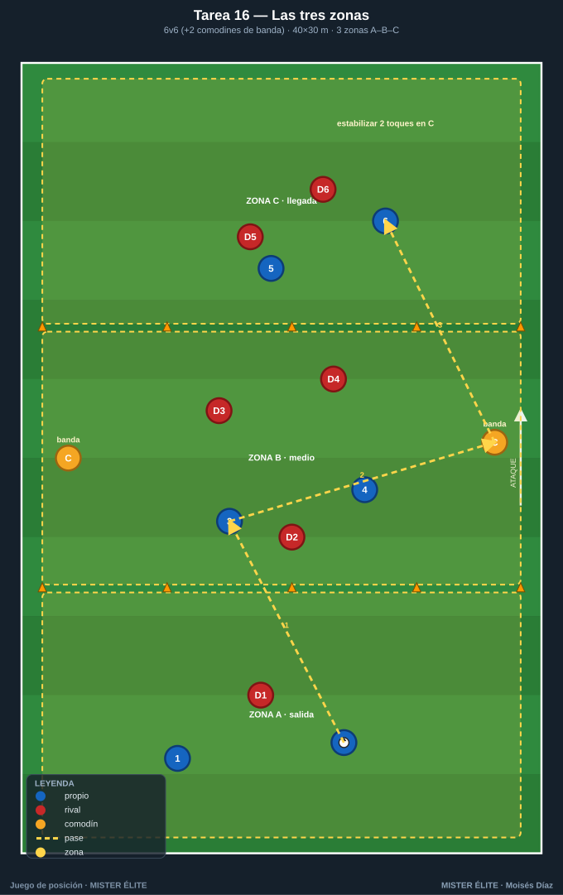
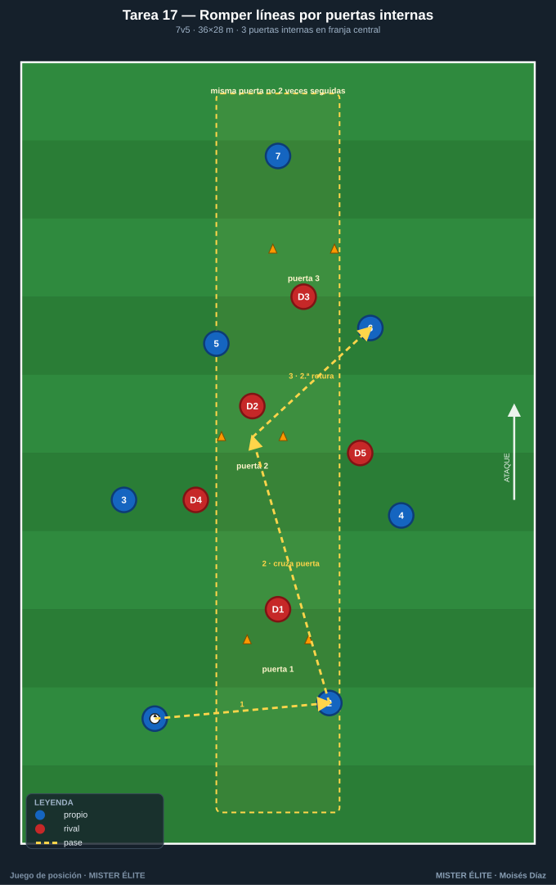
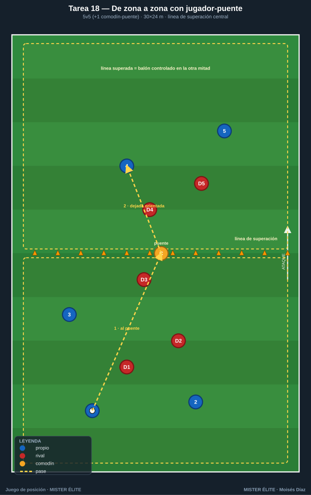
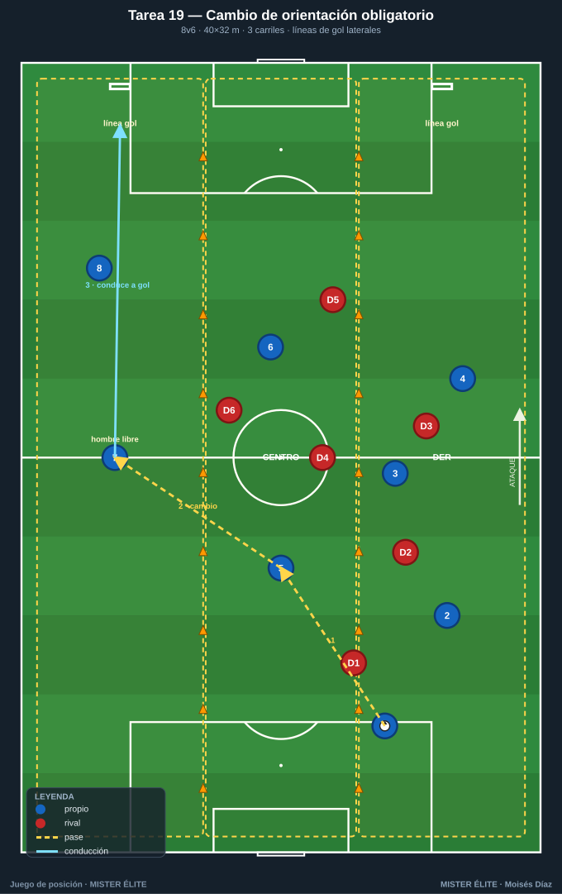
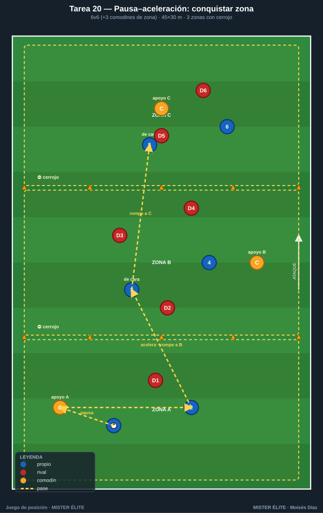

Familia 4 · Posesión con progresión y dirección (T16–20)
Notación: poseedores azules, defensores rojos, comodines ámbar, 2.º equipo poseedor azul-cian. Progresar = avanzar el balón rompiendo líneas en condiciones de seguir jugando, no "tirarlo hacia delante".
Tarea 16 — Las tres zonas (posesión orientada salida–medio–llegada)
Objetivo. Progresar con sentido de juego: dominar el balón sin perder la dirección de ataque; atraer en una zona para progresar a la siguiente.
Organización. - Relación: 6v6 + 2 comodines (ámbar móviles, uno por banda). - Medidas: rectángulo 40×30 m en 3 zonas iguales (≈13,3 m): A (salida) – B (medio) – C (llegada). - Material: petos, 2 ámbar, conos de líneas, balones en cada zona. Sin porterías.

Desarrollo. Posesión libre de A hacia C. Punto = conducir o recibir controlado un balón en la Zona C tras haber pasado por las tres zonas. Si los rojos roban, atacan de C hacia A. Los comodines juegan siempre con el poseedor y solo por las bandas (amplitud + pase de progresión).
Provocaciones (medibles). - Punto = balón estabilizado (2 toques) en Zona C habiendo tocado en A o B antes (no vale largo directo A→C). - Mínimo 5 pases antes de entrar a Zona C. - Progresar A→B→C en menos de 12 s = punto doble.
Variantes (fácil → difícil). 1. Fácil: comodines también dentro del campo (4 apoyos). 2. Media: límite de 2 toques para los azules. 3. Difícil: prohibido que más de 1 jugador retroceda de zona con el balón.
Coaching. - Atraer para liberar: fijar rojos en A para encontrar al libre en B. - Orientación del receptor en B mirando a C antes de recibir. - Tempo: pausa en A, aceleración en el pase que rompe a B/C.
Duración. 4 series de 4 min, 90 s descanso. ≈ 22 min.
Tarea 17 — Romper líneas por puertas internas
Objetivo. Premiar el pase que rompe línea (vertical entre defensores) frente al pase de seguridad; identificar y usar el pasillo interior.
Organización. - Relación: 7v5 (azules en superioridad para favorecer la circulación que crea ventanas). - Medidas: 36×28 m. - Material: 3 "puertas" de 2 m de ancho con conos, repartidas en la franja central a distintas alturas (ventanas entre líneas). Petos, balones. Sin portería.

Desarrollo. Posesión de los azules. Punto cada vez que completan un pase que atraviesa una puerta y es recibido y controlado al otro lado. La misma puerta no se usa dos veces seguidas. Los rojos tapan puertas con su cuerpo; si roban, conservan 6 s para 1 punto de transición.
Provocaciones (medibles). - Pase a través de puerta + control = 1 punto. - Si el receptor da un toque y filtra otro pase a puerta (dos roturas encadenadas) = 3 puntos (tercer hombre). - Objetivo: 8 roturas por serie como equipo.
Variantes (fácil → difícil). 1. Fácil: puertas de 3 m, 4 puertas. 2. Media: puertas de 1,5 m, 3 puertas, 6v5. 3. Difícil: 6v6, las puertas se desplazan (el coach las mueve cada 60 s).
Coaching. - Ver la ventana antes de recibir; convocar el pase con el cuerpo abierto. - Romper línea con el pie adecuado, al pie de progresión del receptor. - Tras la rotura, fijar y buscar la siguiente puerta sin retroceder.
Duración. 3 series de 5 min, 2 min descanso. ≈ 21 min.
Tarea 18 — De zona a zona con jugador-puente (líneas de superación)
Objetivo. Progresar superando líneas mediante apoyo–dejada–tercer hombre; usar el jugador-puente para saltar líneas.
Organización. - Relación: 5v5 + 1 comodín central (ámbar) que vive en la línea media. - Medidas: 30×24 m, dividido por una línea de superación central; el comodín es el único que se mueve libre entre mitades. - Material: petos, conos de línea media, balones. Sin portería.

Desarrollo. El poseedor arranca en su mitad. Punto = pasar el balón a la otra mitad y que sea controlado por un compañero (línea superada). El comodín central actúa de pivote: recibe de espaldas, descarga o gira. Tras superar, encadenar y volver a superar en sentido inverso (combo).
Provocaciones (medibles). - Línea superada por pase directo = 1 punto. - Línea superada usando al comodín-puente con dejada de primer toque (pared) = 2 puntos. - 3 superaciones consecutivas sin pérdida = punto bonus.
Variantes (fácil → difícil). 1. Fácil: 2 comodines-puente. 2. Media: el comodín solo da 1 toque. 3. Difícil: añadir 2.º equipo poseedor (azul-cian): 3 equipos de 4, el que pierde sale; superar línea da derecho a seguir.
Coaching. - Calidad del apoyo: aparecer cuando el poseedor levanta la cabeza, no antes. - Dejada orientada hacia el espacio de progresión, no neutra. - Tercer hombre: el que recibe la dejada ya debe tener decidida la siguiente.
Duración. 4 series de 3,5 min. ≈ 18 min.
Tarea 19 — Posesión con cambio de orientación obligatorio (atraer y progresar al lado débil)
Objetivo. Progresar atrayendo a un carril para liberar el opuesto; ejecutar el cambio de orientación como herramienta de progresión.
Organización. - Relación: 8v6 (sin comodines). - Medidas: 40×32 m en 3 carriles verticales (izq–centro–der, ≈10,7 m c/u). - Material: petos, conos de carril, balones, 2 mini-líneas de gol (líneas de 6 m al fondo de cada carril lateral).

Desarrollo. Azules progresan para conducir el balón sobre cualquiera de las 2 líneas de fondo laterales. Para validar deben haber circulado de un carril lateral al otro (cambio de orientación) al menos una vez. Regla de ocupación viva: máx. 2 azules por carril.
Provocaciones (medibles). - Gol válido solo si el balón cruzó del carril izq al der (o viceversa) en ≤4 pases antes de finalizar. - Cambio con un solo pase largo de un lateral a otro controlado = punto extra. - Si tardan más de 20 s sin cambiar de carril, balón al rival.
Variantes (fácil → difícil). 1. Fácil: cambio permitido en cualquier nº de pases. 2. Media: el cambio debe iniciarlo un jugador de carril central (tercer hombre). 3. Difícil: 8v7 y los rojos pueden saltar a presionar el cambio.
Coaching. - Sobrecargar un lado para abrir el contrario; ver al hombre libre lejos. - El cambio llega al pie que orienta hacia delante. - Cambiar cuando la presión bascula, no antes.
Duración. 3 series de 5 min, 2 min descanso. ≈ 21 min.
Tarea 20 — Pausa–aceleración: conquistar zona y romper a la siguiente (ritmo)
Objetivo. Gestionar el ritmo (pausa–aceleración) como herramienta de progresión: pausar para fijar y consolidar la zona conquistada y acelerar en el pase que rompe a la siguiente. Conservar el terreno ganado sin caer en posesión estéril.
Organización. - Relación: 6v6 + 3 comodines de zona (ámbar): uno fijo en cada zona, solo apoya, no roba. - Medidas: 45×30 m, 3 zonas de 15 m (A–B–C). - Material: petos (2 colores + 3 ámbar), conos, balones, cronómetro del coach. Sin portería.

Desarrollo. Progresar A→B→C. Cerrojo de zona: una vez el balón llega controlado a B, NO puede volver a A; igual de B a C. En cada zona el equipo pausa (asegura con los apoyos y obliga a bascular a los rojos) y solo cuando un compañero se ofrece de cara en la zona siguiente, acelera el pase que rompe. Punto = 3 pases consecutivos en Zona C tras conquistar A→B→C en orden.
Provocaciones (medibles). - Pausa obligada: mínimo 3 pases dentro de cada zona (A y B) antes de romper. Romper sin esos 3 pases no consolida (se repite la zona). - Aceleración premiada: si el pase que rompe llega a un compañero de cara que progresa al primer toque, esa rotura vale doble. - Si el balón vuelve a una zona ya conquistada, posesión al rival. - Comodín de zona máximo 2 toques.
Variantes (fácil → difícil). 1. Fácil: solo el cerrojo de zona (sin mínimo de pausa ni reloj). 2. Media: pausa de 3 pases + aceleración al primer toque. 3. Difícil: ventana de aceleración con tope de 3 s desde que aparece el hombre libre de la zona siguiente.
Coaching. - Pausa = fijar, no dormirse: circular para atraer y abrir la ventana. - Acelerar cuando el rival bascula: la señal es el hombre libre de cara en la zona siguiente. - Cambiar de marcha con el cuerpo ya orientado; primer toque que rompe, no que para.
Duración. 4 series de 4 min, 90 s descanso. ≈ 22 min.
MISTER ÉLITE — Moisés Díaz · Familia 4 · Posesión con progresión y dirección.